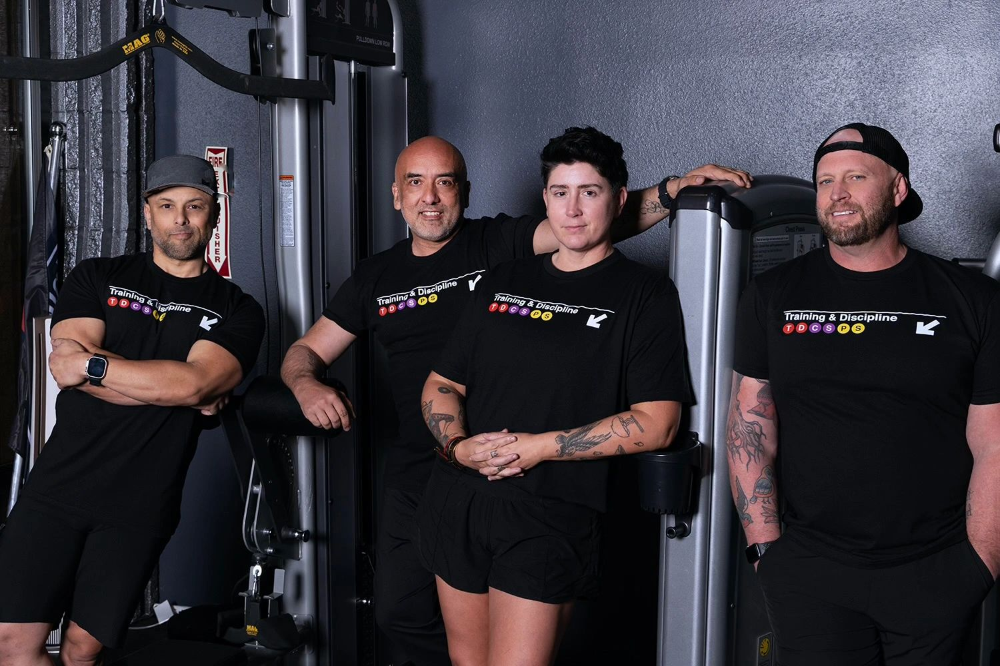

Direction A
PRO-MAX · 01
Transit
Editorial.
The maximalist lean into your subway brand DNA. Massimo Vignelli energy. Black ground, route-bullet IA, oversized Helvetica-style display, station-board sticky nav, route-line program timeline. High-contrast magazine layout density.
Archivo Black
Inter Tight
MTA red·purple·yellow
Editorial grid
Open direction A